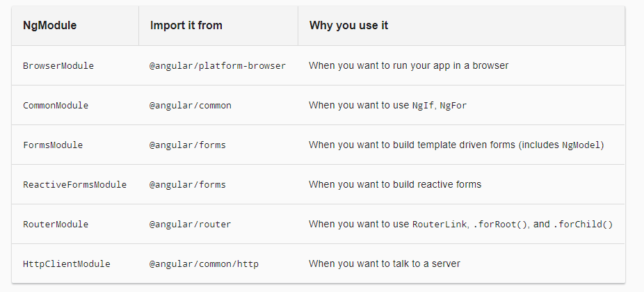

Angular
What is Angular
- Angular is a platform that makes it easy to build applications with the web.
- Developed by Google
- Uses TypeScript language
Why TypeScript
TypeScript (*.ts)
- Developed by Microsoft
- Superset of JavaScript
- Statically typed
- Catch a lot of errors/bugs in compile time
- More clear inheritance
- Annotations/Decorator
- Advanced autocompletion
- Navigation
Architecture

Initialisation
import { platformBrowserDynamic } from '@angular/platform-browser-dynamic';
import { AppModule } from './app/app.module';
platformBrowserDynamic().bootstrapModule(AppModule)
.catch(err => console.error(err));
NgModule
- The basic building blocks of an Angular application are NgModules
- Every Angular app has at least one NgModule class, the root module, which is conventionally named AppModule
- An NgModule is defined by a class decorated with @NgModule().
import { NgModule } from '@angular/core';
import { BrowserModule } from '@angular/platform-browser';
@NgModule({
imports: [ BrowserModule ],
providers: [ Logger ],
declarations: [ AppComponent ],
exports: [ AppComponent ],
bootstrap: [ AppComponent ]
})
export class AppModule { }
Build-in NgModules

Components
@Component
A component controls a patch of screen called a view
@Component
@Component({
selector: 'app-tag',
templateUrl: './app-tag.component.html',
template: 'inline template'
providers: [ RssInfoService ]
})
export class RssDataComponent implements OnInit {
/* . . . */
}
Template
Some text
-
{{padawan.githubAccount}}
- Regular HTML with additional template syntax
- Can use data binding to coordinate the app and DOM data
- Can use pipes to transform data before it is displayed
- Can use directives to apply app logic to what gets displayed.
@Directive
Transform DOM based on some conditions/rules- Structural directives
/* . . . */
Data Binding

Angular supports two-way data binding, a mechanism for coordinating the parts of a template with the parts of a component.
- Interpolation:
{{padawan.githubAccount}} - Property binding:
- Event binding:
- ...
Service/@Injectable()
@Injectable()
export class Logger {
log(msg: any) { console.log(msg); }
error(msg: any) { console.error(msg); }
warn(msg: any) { console.warn(msg); }
}
Dependency Injection

Autowire/Inject dependencies
@Injectable({
providedIn: 'root'|ModuleName,
})
@NgModule({
providers: [
BackendService,
Logger
],
...
})
@Component({
providers: [
BackendService,
Logger
],
...
})